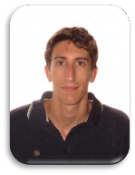

Antonio

Junquera Criado
Madrid
+34 637 85 41 66
Idiomas
Inglés
Español
Redes Sociales:
Visita mi LinkedIn:
“Hacer la mitad de algo es
esencialmente, no hacer nada" -
Jeff Sutherland
Ingeniero informático con conocimiento en gestión de proyectos, organización de
equipos de trabajo y diseño de arquitecturas Cloud basadas en microservicios.
Gran capacidad de trabajo en equipo.
Apasionado de las metodologías Ágiles.
Amplia experiencia en integración de datos a través de múltiples estrategias y
herramientas, principalmente basadas en cloud y con tecnología de Microsoft.
Actualmente estoy buscando enfocar mi carrera hacia la gestión de proyectos.
Certificación en Workato Automation PRO I
Certificación en Workato Automation PRO II
Certificación en Workato Automation PRO III
Becario Desarrollador | 2015 - 2015 |

Prácticas en Efika Market, en las que desarrollé aptitudes de programador
web.
Desarrollador Web | 2015 - 2017 |
Desarrollo de páginas web a medida del cliente y asesoramiento para mostrar
la mejor versión de su negocio.
Consultor Junior | 2017 - 2019 |
Consultor Junior en diversos proyectos como Iberia Express y Bergé-Gefco
Logistics. Durante este tiempo estuve encargado del análisis y desarrollo de
nuevas funcionalidades, resolución de Bugs en ambos proyectos, así como el
mantenimiento y soporte de los mismos.
Consultor y Teamlead | 2019 - 2020 |
Asumí la responsabilidad de la gestión y coordinación del equipo de
desarrollo perteneciente al soporte y mantenimiento, realizando las tareas de
gestión del servicio de producción, planificación de entrega de proyectos y
evolutivos, búsqueda de oportunidades y mejora contínua, así como la toma
de requisitos y diseño de nuevos proyectos.
Senior Teamlead | 2020 - 2021 |
Adicionalmente a las anteriores responsabilidades pasadas, adquirí más
responsabilidades a nivel técnico, aportando soporte sobre arquitectura,
previsiones de escalabilidad de los servicios desplegados, control de gasto
cloud, cuadros de mando etc.